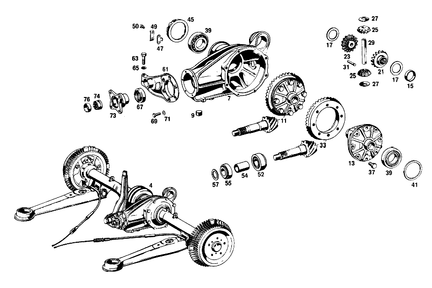

| № | Артикул | Название | Кол. | Примечание | Ограничение |
|---|---|---|---|---|---|
| 4 | A 111 350 22 00 | ЗАДНИЙ МОСТ | - | ||
| 4 | A 110 350 02 03 | КАРТЕР МОСТА | - | с MID\-CENTERING,RATIO 1:4.08 для USE WITH FRONT WHEEL DISC BRAKE [412] БОЛЬШЕ НЕ ПОСТАВЛЯЕТСЯ, ЗАКАЗЫВАТЬ ОТДЕЛЬНЫЕ ДЕТАЛИ [697] ДЕТАЛЬ ПОСТАВЛЯЕТСЯ ТОЛЬКО/ИЛИ ТАКЖЕ КАК ЗАП.ЧАСТЬ [032] NOT FOR USE WITH MERCEDES-BENZ HYDRAULIC-AUTOMATIC CLUTCH [009] 010,10/50,12/52 FROM CHASSIS 052550;010,20/60,22/62 FROM CHASSIS 055144 | |
| 7 | A 110 350 02 20 | КАРТЕР МОСТА | 1 | [015] 010 FROM REAR AXLE 059770 ALSO INSTALLED ON 058018-059709;012 FROM REAR AXLE 003910 | |
| 9 | A 186 997 00 32 | - ЗАГЛУШКА РЕЗЬБОВАЯ | 2 | для OIL DRAIN AND OIL FILLING; M24X1,5 | |
| 11 | A 111 350 09 23 | Дифференциал | 1 | без TAPERED ROLLER BEARING,RATIO 1:4.08 | |
| 13 | A 110 353 01 01 | - КОРПУС ДИФФЕРЕНЦИАЛА | - | [402] БОЛЬШЕ НЕ ПОСТАВЛЯЕТСЯ | |
| 15 | A 110 353 00 48 | - КОЛЬЦО | 1 | Коробка передач [019] 010 FROM REAR AXLE 037328;012 FROM REAR AXLE 088703 ALSO INSTALLED ON 060420-060518 | |
| 15 | A 110 353 00 48 | КОЛЬЦО | 1 | Автоматическая коробка переключения передач | |
| 17 | A 115 353 11 62 | - Упорная шайба | 2 | ПО НЕОБХОДИМОСТИ 1.3 MM; 1.30 MM | |
| 21 | A 110 353 02 15 | - ШЕСТЕРНЯ ПОЛУОСИ | 1 | LEFT,16 TEETH | |
| 23 | A 110 350 01 40 | - ВЕДУЩ.КОН.ШЕСТЕРНЯ | 1 | RIGHT,16 TEETH | |
| 25 | A 110 353 02 14 | - ВЕДУЩ.КОН.ШЕСТЕРНЯ | 2 | ||
| 27 | A 180 353 00 24 | - СФЕРИЧЕСКАЯ ШАЙБА | 2 | ||
| 29 | A 180 353 00 21 | - БОЛТ | 1 | ||
| 31 | A 136 353 02 74 | - БОЛТ | 1 | для DIFFERENTIAL PIN | |
| 33 | A 111 350 07 39 | РЯД ШЕСТЕРЕН | 1 | с RING GEAR, RATIO 1:4.08 [017] 010 FROM REAR AXLE 003992 | |
| 37 | A 128 990 00 01 | - болт | 8 | RING GEAR TO DIFFERENTIAL CASE | |
| 39 | N 000720 030208 | Роликовый подшипник | 2 | для DIFFERENTIAL GEAR | |
| 41 | A 128 353 00 52 | РАСПОРНАЯ ШАЙБА | 1 | ПО НЕОБХОДИМОСТИ 1.8mm | |
| 45 | A 110 353 01 25 | КОЛЬЦО РЕЗЬБОВОЕ | 1 | для REAR AXLE HOUSING | |
| 47 | A 180 353 01 73 | ПРЕДОХРАНИТЕЛЬ | 1 | ||
| 49 | A 180 994 00 30 | Стопорная шайба | 1 | ||
| 50 | N 000933 006103 | Винт | - | ||
| 50 | N 304017 006018 | Винт с 6-гранной головкой | 2 | M6X12 | |
| 52 | A 000 980 10 02 | Конический подшипник | 1 | ||
| 54 | A 110 353 02 42 | ДИСТАНЦ. ВТУЛКА | 1 | ||
| 55 | A 000 980 01 02 | КОНИЧ. РОЛИКОПОДШИПНИК | 1 | ||
| 55 | A 000 980 03 02 | КОНИЧ. РОЛИКОПОДШИПНИК | 1 | ||
| 55 | A 000 980 11 02 | КОНИЧ. РОЛИКОПОДШИПНИК | 1 | ||
| 57 | A 128 353 05 52 | РАСПОРНАЯ ШАЙБА | 1 | ПО НЕОБХОДИМОСТИ 0.80 MM | |
| 61 | A 110 353 03 08 | КРЫШКА | 1 | [021] 010 FROM REAR AXLE 087840;012 FROM REAR AXLE 022910 | |
| 63 | N 070613 010000 | Винт | 1 | [021] 010 FROM REAR AXLE 087840;012 FROM REAR AXLE 022910 | |
| 65 | N 000127 010200 | Пружинное кольцо | 1 | [021] 010 FROM REAR AXLE 087840;012 FROM REAR AXLE 022910 | |
| 67 | A 004 997 56 46 | Уплотнительное кольцо | 1 | ||
| 67 | A 005 997 41 46 | УПЛОТНИТ. КОЛЬЦО | 1 | ||
| 69 | N 070614 008002 | БОЛТ | 6 | [013] 010 FROM REAR AXLE 009906;012 FROM REAR AXLE 026070 | |
| 71 | N 000127 008200 | КОЛЬЦО ПРУЖИННОЕ | 6 | [013] 010 FROM REAR AXLE 009906;012 FROM REAR AXLE 026070 | |
| 73 | A 110 350 01 45 | Фланец | 1 | ||
| 74 | A 111 350 01 66 | Шлицевая гайка | 1 | ||
| 76 | A 111 994 02 44 | - предохранитель | 1 | [036] FROM REAR AXLE 135875 | |
| 78 | A 110 350 12 19 | ТРУБА НЕСУЩАЯ | 1 | СЛЕВА | |
| 80 | A 110 350 13 19 | ТРУБА НЕСУЩАЯ | 1 | СПРАВА | |
| 82 | A 180 351 01 50 | - втулка | 2 | TO YOKE | |
| 84 | A 115 350 02 90 | Воздушный клапан | 1 | для LEFT REAR AXLE TUBE | |
| 87 | A 110 350 04 13 | ШАРНИР ШАРОВОЙ | 1 | ||
| 90 | A 180 357 01 52 | - Диск | 1 | IN SLIDING YOKE | |
| 91 | A 000 994 29 41 | - Стопорное кольцо | 1 | IN SLIDING YOKE | |
| 93 | A 111 350 01 13 | - ШАРНИР ШАРОВОЙ | 1 | с GUIDE PLATE IN SLIDING YOKE | |
| 95 | N 000471 032000 | - Стопорное кольцо | 2 | IN SLIDING YOKE | |
| 97 | A 180 981 00 86 | - Ролик | 108 | 4X4 MM IN SLIDING YOKE | |
| 99 | A 188 357 00 52 | - Диск | 1 | IN SLIDING YOKE | |
| 101 | A 094 990 71 05 | - Стопорное кольцо | 1 | IN SLIDING YOKE | |
| 103 | A 112 350 00 28 | ШАРНИР КАРДАННЫЙ | - | [023] FROM REAR AXLE 100942 | |
| 107 | A 186 994 12 35 | - Пруж. стопорное кольцо | 4 | ПО НЕОБХОДИМОСТИ 2.15 MM [023] FROM REAR AXLE 100942 | |
| 110 | A 110 997 00 32 | ЗАГЛУШКА РЕЗЬБОВАЯ | 1 | [402] БОЛЬШЕ НЕ ПОСТАВЛЯЕТСЯ | |
| 112 | N 000127 010200 | Пружинное кольцо | 1 | ||
| 114 | A 180 353 30 52 | РАСПОРНАЯ ШАЙБА | 1 | ПО НЕОБХОДИМОСТИ 1.0 MM | |
| 119 | A 110 357 04 91 | Манжета | 1 | для RIGHT REAR AXLE TUBE | |
| 121 | A 110 357 03 91 | Манжета | 1 | SPLIT REPAIR SIZE | |
| 123 | A 002 988 10 78 | Скоба | 9 | REPAIR SIZE | |
| 126 | A 110 357 11 01 | ВАЛ ЗАДНЕГО МОСТА | 1 | СЛЕВА [025] 010 FROM REAR AXLE 000713;012 FROM REAR AXLE 057090 | |
| 127 | A 110 357 12 01 | ВАЛ ЗАДНЕГО МОСТА | 1 | СПРАВА [037] 010 FROM REAR AXLE 000713-139804;012 FROM REAR AXLE 057090-139804 | |
| 129 | A 001 981 15 25 | Шарикоподшипник | - | ||
| 129 | A 002 981 23 01 | ПОДШ. С ЦИЛ. РОЛИКАМИ | 2 | ||
| 131 | A 183 353 03 73 | предохранитель | 2 | ||
| 133 | A 153 357 00 26 | Шлицевая гайка | 2 | ||
| 135 | N 000933 010164 | Винт | 4 | LEFT REAR AXLE TUBE TO REAR AXLE HOUSING | |
| 137 | N 000933 008154 | Винт | - | ||
| 137 | N 304017 008021 | Винт с 6-гранной головкой | 4 | M8X20 | |
| 140 | A 180 421 08 01 | ТОРМОЗНОЙ БАРАБАН | 1 | [002] 010,10/50,20/60 FROM CHASSIS 023661 ALSO INSTALLED ON,SEE FOOTNOTE 40;010,12/52,22/62 FROM CHASSIS 000001 [040] 023626- 023628, 023631, 023633, 023636, 023639, 023640, 023642- 023644, 023646- 023649, 023651, 023659. | |
| 142 | A 110 351 00 74 | Палец | 1 | [021] 010 FROM REAR AXLE 087840;012 FROM REAR AXLE 022910 | |
| 145 | A 180 351 01 53 | Проставочная втулка | 2 | ПО НЕОБХОДИМОСТИ 26.0 MM | |
| 148 | A 180 351 14 52 | Компенсационная шайба | 2 | ПО НЕОБХОДИМОСТИ 2.0 MM | |
| 149 | A 180 351 13 52 | Центрирующее кольцо | - | ||
| 149 | A 180 351 14 52 | Компенсационная шайба | 2 | ПО НЕОБХОДИМОСТИ 1.9 MM | |
| 156 | A 180 351 03 51 | Проставочное кольцо | 2 | ||
| 159 | A 180 351 09 86 | Резиновое кольцо | 4 | ON SHIMS | |
| 161 | A 180 351 00 74 | Клин | 1 | CONNECTING PIN TO REAR AXLE HOUSING | |
| 162 | N 000127 008200 | КОЛЬЦО ПРУЖИННОЕ | 1 | CONNECTING PIN TO REAR AXLE HOUSING | |
| 164 | N 000934 008010 | Гайка | - | ||
| 164 | N 304032 008006 | Шестигранная гайка | 1 | CONNECTING PIN TO REAR AXLE HOUSING; M8 | |
| 166 | A 180 994 03 41 | Стопорное кольцо | 1 | IN CONNECTING PIN | |
| 168 | N 000433 020000 | ШАЙБА | 1 | IN CONNECTING PIN | |
| 171 | A 180 997 04 30 | Резьбовая пробка | 1 | ||
| 172 | A 180 994 01 12 | Стопорная шайба | 1 | ||
| 173 | N 071412 006100 | Пресс-масленка | 1 | REAR для RIGHT REAR AXLE TUBE [402] БОЛЬШЕ НЕ ПОСТАВЛЯЕТСЯ | |
| 175 | N 071412 006200 | Пресс-масленка | 1 | FRONT 20.5 MM HIGH для RIGHT REAR AXLE TUBE | |
| 177 | A 110 350 12 75 | Резиновая опора | 1 | [021] 010 FROM REAR AXLE 087840;012 FROM REAR AXLE 022910 | |
| 179 | A 109 350 00 32 | Кронштейн | 1 | ||
| 181 | N 001473 003001 | - Просечной штифт | 1 | ||
| 183 | N 070614 010018 | Винт | 2 | ||
| 185 | N 000127 010200 | Пружинное кольцо | 2 | ||
| 187 | A 110 350 10 29 | НИЖН. ПРОДОЛЬН. ШТАНГА | 1 | СЛЕВА | |
| 189 | A 110 352 18 65 | Резиновая опора | 1 | ||
| 191 | A 111 352 05 09 | Опорный палец | 2 | ||
| 193 | A 111 352 12 76 | Пружинная шайба | 4 | ||
| 195 | N 009045 032000 | Пруж. стопорное кольцо | 4 | ||
| 197 | A 110 352 01 51 | Проставочное кольцо | 4 | ||
| 199 | A 111 352 01 71 | болт | 4 | ||
| 200 | A 111 352 01 73 | Стопорная шайба | 4 | ||
| 202 | A 110 350 06 75 | Резиновая опора | 1 | с CLAMPING PLATE SUPPORT TO FRAME FLOOR UNIT | |
| 204 | A 111 350 05 67 | ШАЙБА УПОРНАЯ | 1 | TOP SUPPORT TO FRAME FLOOR UNIT | |
| 206 | N 000961 016004 | Винт | 1 | SUPPORT TO FRAME FLOOR UNIT | |
| 208 | N 000127 016200 | Пружинное кольцо | 1 | SUPPORT TO FRAME FLOOR UNIT | |
| 211 | N 000933 010128 | Винт | 4 | RUBBER MOUNT TO FRAME FLOOR UNIT | |
| 213 | N 000127 010200 | Пружинное кольцо | 4 | RUBBER MOUNT TO FRAME FLOOR UNIT | |
| 215 | A 110 350 04 93 | Поперечная распорка | 1 | ||
| 217 | N 000934 014019 | Гайка | - | ||
| 217 | N 308673 014001 | Шестигранная гайка | 1 | CROSS STRUT TO SHACKLE; M14X1.5 | |
| 219 | A 111 351 03 40 | ДЕРЖАТЕЛЬ | 1 | для CROSS STRUT | |
| 221 | A 111 351 04 48 | Резиновая опора | 2 | ||
| 223 | A 111 351 02 40 | Язычок | 1 | ||
| 225 | N 000933 010238 | Винт | - | ||
| 225 | N 304017 010028 | Винт с 6-гранной головкой | 1 | M10X20\-8.8 | |
| 227 | N 000137 010201 | Пружинная шайба | 1 | ||
| 229 | N 000960 012163 | БОЛТ | 1 | ||
| 231 | N 000137 012203 | Пружинная шайба | - | ||
| 231 | A 094 990 42 05 | Пружинная шайба | 1 | ||
| 233 | A 110 351 07 43 | Чашка | 1 | INSIDE CROSS STRUT TO FRAME FLOOR UNIT | |
| 235 | A 111 351 04 44 | Резиновое кольцо | 2 | CROSS STRUT TO FRAME FLOOR UNIT | |
| 238 | A 110 351 06 43 | Чашка | 1 | OUTSIDE CROSS STRUT TO FRAME FLOOR UNIT | |
| 240 | N 000934 012023 | Гайка | - | ||
| 240 | N 308673 012002 | Шестигранная гайка | 1 | CROSS STRUT TO FRAME FLOOR UNIT | |
| 242 | N 007967 012000 | Гайка | 1 | CROSS STRUT TO FRAME FLOOR UNIT | |
| 244 | A 110 352 10 65 | Резиновая опора | 2 | ПЕРЕБОРКА НА ПОЛУ КАБИНЫ | |
| 246 | A 110 352 00 42 | Крепежная пластина | 2 | ПЕРЕБОРКА НА ПОЛУ КАБИНЫ [028] 010 FROM CHASSIS 018283;012 FROM CHASSIS 008704 | |
| 248 | A 108 990 03 40 | Диск | 2 | MOUNTING PLATE TO BODY FLOOR [028] 010 FROM CHASSIS 018283;012 FROM CHASSIS 008704 | |
| 251 | N 000127 008203 | Пружинное кольцо | 6 | MOUNTING PLATE TO BODY FLOOR [028] 010 FROM CHASSIS 018283;012 FROM CHASSIS 008704 | |
| 253 | N 000934 008010 | Гайка | - | ||
| 253 | N 304032 008006 | Шестигранная гайка | 6 | MOUNTING PLATE TO BODY FLOOR; M8 [028] 010 FROM CHASSIS 018283;012 FROM CHASSIS 008704 | |
| 255 | N 912004 014100 | Пружинное кольцо | 2 | ПЕРЕБОРКА НА ПОЛУ КАБИНЫ [030] 010 FROM CHASSIS 030864;012 FROM CHASSIS 063373 | |
| 257 | N 000934 014019 | Гайка | - | ||
| 257 | N 308673 014001 | Шестигранная гайка | 2 | ПЕРЕБОРКА НА ПОЛУ КАБИНЫ; M14X1.5 [030] 010 FROM CHASSIS 030864;012 FROM CHASSIS 063373 | |
| A 110 350 03 00 | ЗАДНИЙ МОСТ | 1 | RATIO 1:3.9 для USE с FRONT WHEEL DRUM BRAKE Коробка передач [001] 010,10/50,20/60 UP TO CHASSIS 023660 EXCEPT FOR,SEE FOOTNOTE 40 [040] 023626- 023628, 023631, 023633, 023636, 023639, 023640, 023642- 023644, 023646- 023649, 023651, 023659. | ||
| A 110 350 10 00 | ЗАДНИЙ МОСТ | 1 | RATIO 1:3.9 для USE с FRONT WHEEL DRUM BRAKE [002] 010,10/50,20/60 FROM CHASSIS 023661 ALSO INSTALLED ON,SEE FOOTNOTE 40;010,12/52,22/62 FROM CHASSIS 000001 [040] 023626- 023628, 023631, 023633, 023636, 023639, 023640, 023642- 023644, 023646- 023649, 023651, 023659. [006] 010,10/50,12/52 UP TO CHASSIS 048976 EXCEPT FOR,SEE FOOTNOTE 42;010,20/60,22/62 UP TO CHASSIS 049090 EXCEPT FOR 046334,048382,048491 [042] 044859, 046394, 048273, 048278, 048347, 048349, 048366, 048379, 048460, 048481, 048493, 048510, 048905- 048913, 048915- 048928, 048930- 048933, 048935- 048937, 048940, 048942, 048952- 048954, 048956, 048966, 048968- 048973. | ||
| A 110 350 06 00 | ЗАДНИЙ МОСТ | 1 | RATIO 1:4.1 для USE с FRONT WHEEL DRUM BRAKE Коробка передач [001] 010,10/50,20/60 UP TO CHASSIS 023660 EXCEPT FOR,SEE FOOTNOTE 40 [040] 023626- 023628, 023631, 023633, 023636, 023639, 023640, 023642- 023644, 023646- 023649, 023651, 023659. [005] ON SPECIAL REQUEST,FOR MADEIRA AND HONGKONG | ||
| A 110 350 11 00 | ЗАДНИЙ МОСТ | 1 | RATIO 1:4.1 для USE с FRONT WHEEL DRUM BRAKE [006] 010,10/50,12/52 UP TO CHASSIS 048976 EXCEPT FOR,SEE FOOTNOTE 42;010,20/60,22/62 UP TO CHASSIS 049090 EXCEPT FOR 046334,048382,048491 [042] 044859, 046394, 048273, 048278, 048347, 048349, 048366, 048379, 048460, 048481, 048493, 048510, 048905- 048913, 048915- 048928, 048930- 048933, 048935- 048937, 048940, 048942, 048952- 048954, 048956, 048966, 048968- 048973. [005] ON SPECIAL REQUEST,FOR MADEIRA AND HONGKONG | ||
| A 111 350 19 00 | ЗАДНИЙ МОСТ | - | |||
| A 110 350 00 03 | КАРТЕР МОСТА | - | с MID\-CENTERING,RATIO 1:3.9 для USE WITH FRONT WHEEL DISC BRAKE [412] БОЛЬШЕ НЕ ПОСТАВЛЯЕТСЯ, ЗАКАЗЫВАТЬ ОТДЕЛЬНЫЕ ДЕТАЛИ [007] 010,10/50,12/52 FROM CHASSIS 048977 ALSO INSTALLED ON,SEE FOOTNOTE 42;010,20/60,22/62 FROM CHASSIS 049091 ALSO INSTALLED ON 046334,048382,048491 [042] 044859, 046394, 048273, 048278, 048347, 048349, 048366, 048379, 048460, 048481, 048493, 048510, 048905- 048913, 048915- 048928, 048930- 048933, 048935- 048937, 048940, 048942, 048952- 048954, 048956, 048966, 048968- 048973. [032] NOT FOR USE WITH MERCEDES-BENZ HYDRAULIC-AUTOMATIC CLUTCH [008] 010,10/50,12/52 UP TO CHASSIS 052549;010,20/60,22/62 UP TO CHASSIS 055143 [031] UP TO CHASSIS 049493 RANGE OF DELIVERY INCLUDES:12 PIECES 110 401 01 70 | ||
| A 111 350 23 00 | ЗАДНИЙ МОСТ | - | |||
| A 110 350 02 03 | КАРТЕР МОСТА | - | [412] БОЛЬШЕ НЕ ПОСТАВЛЯЕТСЯ, ЗАКАЗЫВАТЬ ОТДЕЛЬНЫЕ ДЕТАЛИ [697] ДЕТАЛЬ ПОСТАВЛЯЕТСЯ ТОЛЬКО/ИЛИ ТАКЖЕ КАК ЗАП.ЧАСТЬ [034] APPLICABLE TO 000 (AMBULANCE) AND TO 001 (SPECIAL BODIES) | ||
| A 110 350 00 03 | КАРТЕР МОСТА | 1 | ПЕРЕДАТОЧНОЕ ОТНОШЕНИЕ: 1:3.9 [008] 010,10/50,12/52 UP TO CHASSIS 052549;010,20/60,22/62 UP TO CHASSIS 055143 | ||
| A 110 350 02 03 | КАРТЕР МОСТА | 1 | ПЕРЕДАТОЧНОЕ ОТНОШЕНИЕ: 1:4.08 [412] БОЛЬШЕ НЕ ПОСТАВЛЯЕТСЯ, ЗАКАЗЫВАТЬ ОТДЕЛЬНЫЕ ДЕТАЛИ [697] ДЕТАЛЬ ПОСТАВЛЯЕТСЯ ТОЛЬКО/ИЛИ ТАКЖЕ КАК ЗАП.ЧАСТЬ [009] 010,10/50,12/52 FROM CHASSIS 052550;010,20/60,22/62 FROM CHASSIS 055144 | ||
| A 110 350 00 20 | КАРТЕР МОСТА | - | Коробка передач [012] 010 UP TO REAR AXLE 009905;012 UP TO REAR AXLE 026069 | ||
| A 110 350 01 20 | КАРТЕР МОСТА | - | [013] 010 FROM REAR AXLE 009906;012 FROM REAR AXLE 026070 [014] 010 UP TO REAR AXLE 059769 EXCEPT FOR 058018-059709;012 UP TO REAR AXLE 003909 | ||
| A 180 353 05 01 | - КОРПУС ДИФФЕРЕНЦИАЛА | - | [018] 010 UP TO REAR AXLE 037327;012 UP TO REAR AXLE 088702 EXCEPT FOR 060420-060518 | ||
| A 180 353 11 62 | - ШАЙБА УПОРНАЯ | - | |||
| A 115 353 10 62 | - Упорная шайба | 2 | ПО НЕОБХОДИМОСТИ 1.4 MM; 1.40 MM | ||
| A 180 353 12 62 | - ШАЙБА УПОРНАЯ | - | |||
| A 115 353 09 62 | - Упорная шайба | 2 | ПО НЕОБХОДИМОСТИ 1.5mm; 1.50 MM | ||
| A 180 353 13 62 | - ШАЙБА УПОРНАЯ | - | |||
| A 115 353 08 62 | - Упорная шайба | 2 | ПО НЕОБХОДИМОСТИ 1.6mm; 1.60 MM | ||
| A 115 353 07 62 | - ШАЙБА УПОРНАЯ | 2 | ПО НЕОБХОДИМОСТИ 1.7 MM; 1.70 MM [402] БОЛЬШЕ НЕ ПОСТАВЛЯЕТСЯ | ||
| A 110 350 03 39 | РЯД ШЕСТЕРЕН | 1 | с RING GEAR,RATIO 1:3.9 [016] 010 UP TO REAR AXLE 003991 | ||
| A 111 350 05 39 | РЯД ШЕСТЕРЕН | 1 | с RING GEAR для SPECIAL PURPOSES RATIO 1:4.56 | ||
| A 108 586 01 35 | ремкомплект | 1 | |||
| A 128 353 01 52 | РАСПОРНАЯ ШАЙБА | 1 | ПО НЕОБХОДИМОСТИ 1.9 MM | ||
| A 128 353 02 52 | РАСПОРНАЯ ШАЙБА | 1 | ПО НЕОБХОДИМОСТИ 2.0 MM | ||
| A 128 353 03 52 | РАСПОРНАЯ ШАЙБА | 1 | ПО НЕОБХОДИМОСТИ 2.1 MM | ||
| A 128 353 04 52 | РАСПОРНАЯ ШАЙБА | 1 | ПО НЕОБХОДИМОСТИ 2.2 MM | ||
| A 180 353 02 73 | ПРЕДОХРАНИТЕЛЬ | 1 | |||
| A 180 353 03 73 | ПРЕДОХРАНИТЕЛЬ | 1 | |||
| A 180 353 05 73 | предохранитель | 1 | |||
| A 180 353 06 73 | ПРЕДОХРАНИТЕЛЬ | 1 | |||
| A 128 353 07 52 | РАСПОРНАЯ ШАЙБА | 1 | ПО НЕОБХОДИМОСТИ 0.90 MM | ||
| A 128 353 09 52 | РАСПОРНАЯ ШАЙБА | 1 | ПО НЕОБХОДИМОСТИ 1.00 MM | ||
| A 128 353 11 52 | РАСПОРНАЯ ШАЙБА | 1 | ПО НЕОБХОДИМОСТИ 1.10 MM | ||
| A 128 353 13 52 | РАСПОРНАЯ ШАЙБА | 1 | ПО НЕОБХОДИМОСТИ 1.20 MM | ||
| A 128 353 15 52 | РАСПОРНАЯ ШАЙБА | 1 | ПО НЕОБХОДИМОСТИ 1.30 MM | ||
| A 128 353 17 52 | РАСПОРНАЯ ШАЙБА | 1 | ПО НЕОБХОДИМОСТИ 1.40 MM | ||
| A 128 353 19 52 | РАСПОРНАЯ ШАЙБА | 1 | ПО НЕОБХОДИМОСТИ 1.50 MM | ||
| A 110 353 00 08 | КРЫШКА | 1 | Коробка передач [012] 010 UP TO REAR AXLE 009905;012 UP TO REAR AXLE 026069 | ||
| A 110 353 02 08 | КРЫШКА | 1 | [013] 010 FROM REAR AXLE 009906;012 FROM REAR AXLE 026070 | ||
| A 110 353 02 08 | КРЫШКА | 1 | [020] 010 UP TO REAR AXLE 087839;012 UP TO REAR AXLE 022909 | ||
| N 000931 007002 | БОЛТ | 6 | Коробка передач [012] 010 UP TO REAR AXLE 009905;012 UP TO REAR AXLE 026069 | ||
| N 000127 007200 | Пружинное кольцо | 6 | Коробка передач [012] 010 UP TO REAR AXLE 009905;012 UP TO REAR AXLE 026069 | ||
| A 110 320 24 43 | Держатель | 1 | СЛЕВА | ||
| A 110 320 25 43 | ДЕРЖАТЕЛЬ | 1 | СПРАВА [402] БОЛЬШЕ НЕ ПОСТАВЛЯЕТСЯ | ||
| A 111 350 00 13 | ШАРНИР ШАРОВОЙ | - | |||
| A 110 350 01 13 | ШАРНИР ШАРОВОЙ | - | |||
| A 110 350 02 13 | ШАРНИР ШАРОВОЙ | - | |||
| A 111 350 00 28 | - ШАРНИР КАРДАННЫЙ | 1 | с NEEDLE BEARING BUSHING AND NEEDLES [022] UP TO REAR AXLE 100941 | ||
| A 112 350 01 28 | Карданный шарнир | 1 | |||
| A 120 994 01 35 | - СТОПОРН. КОЛЬЦО | 4 | ПО НЕОБХОДИМОСТИ 2.25 MM [022] UP TO REAR AXLE 100941 | ||
| A 120 994 04 35 | - СТОПОРН. КОЛЬЦО | 4 | ПО НЕОБХОДИМОСТИ 2.35 MM [022] UP TO REAR AXLE 100941 | ||
| A 120 994 06 35 | - СТОПОРН. КОЛЬЦО | 4 | ПО НЕОБХОДИМОСТИ 2.40 MM [022] UP TO REAR AXLE 100941 | ||
| A 120 994 07 35 | - СТОПОРН. КОЛЬЦО | 4 | ПО НЕОБХОДИМОСТИ 2.45 MM [022] UP TO REAR AXLE 100941 | ||
| A 120 994 08 35 | - СТОПОРН. КОЛЬЦО | 4 | ПО НЕОБХОДИМОСТИ 2.55 MM [022] UP TO REAR AXLE 100941 | ||
| A 186 994 04 35 | - СТОПОРН. КОЛЬЦО | 4 | ПО НЕОБХОДИМОСТИ 2.25 MM [023] FROM REAR AXLE 100942 | ||
| A 186 994 15 35 | - СТОПОРН. КОЛЬЦО | 4 | ПО НЕОБХОДИМОСТИ 2.35 MM [023] FROM REAR AXLE 100942 | ||
| A 186 994 17 35 | - СТОПОРН. КОЛЬЦО | 4 | ПО НЕОБХОДИМОСТИ 2.45 MM [023] FROM REAR AXLE 100942 | ||
| A 186 994 19 35 | - СТОПОРН. КОЛЬЦО | 4 | ПО НЕОБХОДИМОСТИ 2.55 MM [023] FROM REAR AXLE 100942 | ||
| A 180 353 31 52 | РАСПОРНАЯ ШАЙБА | 1 | ПО НЕОБХОДИМОСТИ 1.1 MM | ||
| A 180 353 33 52 | РАСПОРНАЯ ШАЙБА | 1 | ПО НЕОБХОДИМОСТИ 1.2 MM | ||
| A 180 353 35 52 | РАСПОРНАЯ ШАЙБА | 1 | ПО НЕОБХОДИМОСТИ 1.3 MM | ||
| A 180 353 37 52 | РАСПОРНАЯ ШАЙБА | 1 | ПО НЕОБХОДИМОСТИ 1.4 MM | ||
| A 180 353 39 52 | РАСПОРНАЯ ШАЙБА | 1 | ПО НЕОБХОДИМОСТИ 1.5mm | ||
| A 180 353 41 52 | РАСПОРНАЯ ШАЙБА | 1 | ПО НЕОБХОДИМОСТИ 1.6mm | ||
| A 180 353 43 52 | РАСПОРНАЯ ШАЙБА | 1 | ПО НЕОБХОДИМОСТИ 1.7 MM | ||
| A 180 353 45 52 | РАСПОРНАЯ ШАЙБА | 1 | ПО НЕОБХОДИМОСТИ 1.8mm | ||
| A 180 353 47 52 | РАСПОРНАЯ ШАЙБА | 1 | ПО НЕОБХОДИМОСТИ 1.9 MM | ||
| A 180 353 49 52 | РАСПОРНАЯ ШАЙБА | 1 | ПО НЕОБХОДИМОСТИ 2.0 MM | ||
| A 110 350 05 10 | ПОЛУОСЬ | - | [024] 010 UP TO REAR AXLE 000712;012 UP TO REAR AXLE 057089 | ||
| A 110 350 07 10 | ПОЛУОСЬ | - | [024] 010 UP TO REAR AXLE 000712;012 UP TO REAR AXLE 057089 | ||
| A 110 350 06 10 | ПОЛУОСЬ | - | [024] 010 UP TO REAR AXLE 000712;012 UP TO REAR AXLE 057089 | ||
| A 110 350 08 10 | ПОЛУОСЬ | - | [024] 010 UP TO REAR AXLE 000712;012 UP TO REAR AXLE 057089 | ||
| A 120 401 01 71 | - Шпилька крепления колеса | 10 | [024] 010 UP TO REAR AXLE 000712;012 UP TO REAR AXLE 057089 | ||
| A 110 357 15 01 | ВАЛ ЗАДНЕГО МОСТА | 1 | [038] FROM REAR AXLE 139805 | ||
| N 900288 088003 | Хомут | 1 | ТРУБА НЕСУЩАЯ | ||
| N 900288 121000 | Хомут | 1 | КАРТЕР ЗАДНЕГО МОСТА | ||
| A 120 421 06 01 | ТОРМОЗНОЙ БАРАБАН | 1 | Коробка передач [001] 010,10/50,20/60 UP TO CHASSIS 023660 EXCEPT FOR,SEE FOOTNOTE 40 [040] 023626- 023628, 023631, 023633, 023636, 023639, 023640, 023642- 023644, 023646- 023649, 023651, 023659. | ||
| A 111 350 00 68 | Ремк-т полуоси зад. моста | 2 | УПЛОТНЕНИЕ ПОЛУОСИ ЗАДНЕГО МОСТА | ||
| A 180 351 06 74 | БОЛТ | 1 | [020] 010 UP TO REAR AXLE 087839;012 UP TO REAR AXLE 022909 | ||
| A 180 351 18 53 | Проставочная втулка | 2 | ПО НЕОБХОДИМОСТИ 25.8 MM | ||
| A 180 351 17 53 | Проставочная втулка | 2 | ПО НЕОБХОДИМОСТИ 25.6 MM | ||
| A 180 351 16 53 | Проставочная втулка | 2 | ПО НЕОБХОДИМОСТИ 25.4 MM | ||
| A 180 351 15 53 | РАСПОРН. ТРУБКА | - | |||
| A 180 351 16 53 | Проставочная втулка | 2 | ПО НЕОБХОДИМОСТИ 25.2 MM | ||
| A 180 351 14 53 | Проставочная втулка | 2 | ПО НЕОБХОДИМОСТИ 25.0 MM | ||
| A 180 351 14 52 | Компенсационная шайба | 2 | ПО НЕОБХОДИМОСТИ 2.0 MM | ||
| A 180 351 15 52 | Дистанционная шайба | 2 | ПО НЕОБХОДИМОСТИ 2.1 MM | ||
| A 180 351 16 52 | Компенсационная шайба | 2 | ПО НЕОБХОДИМОСТИ 2.2 MM | ||
| A 180 351 17 52 | Компенсационная шайба | 2 | ПО НЕОБХОДИМОСТИ 2.3 MM | ||
| A 180 351 18 52 | Компенсационная шайба | 2 | ПО НЕОБХОДИМОСТИ 2.4 MM | ||
| A 180 351 19 52 | Компенсационная шайба | 2 | ПО НЕОБХОДИМОСТИ 2.5mm | ||
| A 180 351 27 52 | Компенсационная шайба | 2 | ПО НЕОБХОДИМОСТИ 2.6 MM | ||
| A 180 351 28 52 | Компенсационная шайба | 2 | ПО НЕОБХОДИМОСТИ 2.7 MM | ||
| A 180 351 29 52 | Центрирующее кольцо | - | |||
| A 180 351 30 52 | Компенсационная шайба | 2 | ПО НЕОБХОДИМОСТИ 2.8 MM | ||
| A 180 351 30 52 | Компенсационная шайба | 2 | ПО НЕОБХОДИМОСТИ 2.9 MM | ||
| A 180 351 20 52 | Компенсационная шайба | 2 | ПО НЕОБХОДИМОСТИ 3.0 MM | ||
| A 180 351 31 52 | Компенсационная шайба | 2 | ПО НЕОБХОДИМОСТИ 3.1 MM | ||
| A 180 351 32 52 | Центрирующее кольцо | - | |||
| A 180 351 31 52 | Компенсационная шайба | 2 | ПО НЕОБХОДИМОСТИ 3.2 MM | ||
| A 180 351 11 53 | РАСПОРН. ТРУБКА | 1 | для CONNECTING PIN,FRONT [020] 010 UP TO REAR AXLE 087839;012 UP TO REAR AXLE 022909 | ||
| A 111 350 02 75 | САЙЛЕНТ-БЛОК | 1 | [020] 010 UP TO REAR AXLE 087839;012 UP TO REAR AXLE 022909 | ||
| A 110 350 11 29 | НИЖН. ПРОДОЛЬН. ШТАНГА | 1 | СПРАВА | ||
| A 110 350 14 75 | Ремк-т реактивной штанги | 1 | |||
| A 111 352 03 71 | БОЛТ | 4 | |||
| A 112 350 04 75 | САЙЛЕНТ-БЛОК | 1 | с CLAMPING PLATE SUPPORT TO FRAME FLOOR UNIT [034] APPLICABLE TO 000 (AMBULANCE) AND TO 001 (SPECIAL BODIES) | ||
| A 110 351 03 45 | ПОДКЛАДКА | 1 | BOTTOM SUPPORT TO FRAME FLOOR UNIT Коробка передач [026] 010 UP TO CHASSIS 010239;012 UP TO CHASSIS 020877 | ||
| A 000 545 02 38 | ФИТИНГ | 1 | SUPPORT TO FRAME FLOOR UNIT Коробка передач [039] ONLY FOR USE WITH MERCEDES-BENZ HYDRAULIC-AUTOMATIC CLUTCH | ||
| A 112 351 02 45 | ПОДКЛАДКА | 1 | TOP SUPPORT TO FRAME FLOOR UNIT | ||
| A 110 352 00 67 | ТАРЕЛКА | 2 | ПЕРЕБОРКА НА ПОЛУ КАБИНЫ Коробка передач [027] 010 UP TO CHASSIS 018282;012 UP TO CHASSIS 008703 | ||
| N 000933 008147 | Винт | - | |||
| N 304017 008021 | Винт с 6-гранной головкой | 4 | MOUNTING PLATE TO BODY FLOOR; M8X20 [028] 010 FROM CHASSIS 018283;012 FROM CHASSIS 008704 | ||
| N 000125 008407 | ШАЙБА | 8 | MOUNTING PLATE TO BODY FLOOR [028] 010 FROM CHASSIS 018283;012 FROM CHASSIS 008704 | ||
| A 180 352 03 72 | ГАЙКА | 2 | ПЕРЕБОРКА НА ПОЛУ КАБИНЫ [029] 010 UP TO CHASSIS 030863;012 UP TO CHASSIS 063372 | ||
| N 000094 003005 | ШПЛИНТ | 2 | ПЕРЕБОРКА НА ПОЛУ КАБИНЫ [029] 010 UP TO CHASSIS 030863;012 UP TO CHASSIS 063372 |
Позиций: 249 · подписано на схемах: 133 · колесо — плавный зум в курсор, перетаскивание — пан, двойной клик — зум, клик по артикулу — скопировать · наведите на строку или цифру на схеме — подсветка связки, клик — закрепить.